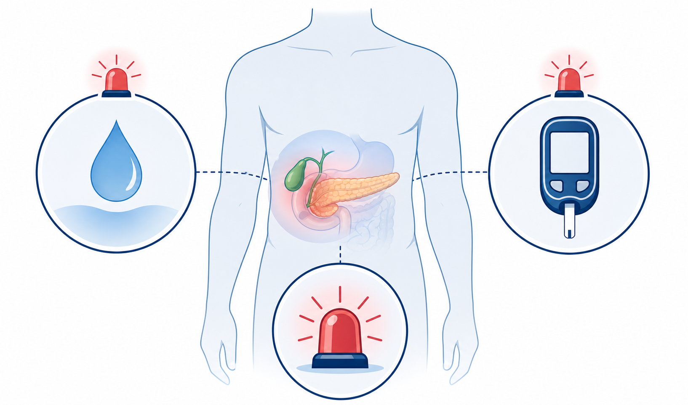
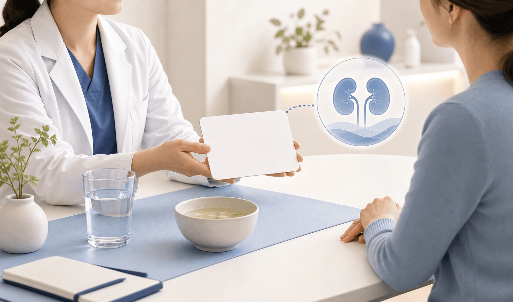
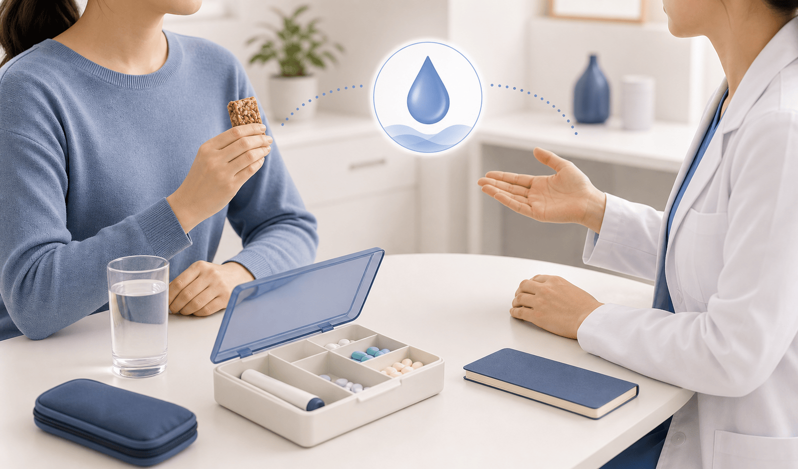

췌장염과 담낭질환은 드물지만 반드시 확인해야 하는 위험 신호입니다.

탈수는 어지럼, 신장기능 악화, 심한 무기력으로 이어질 수 있습니다.

GLP-1 계열 자체보다 인슐린·설폰요소제 병용 시 저혈당 위험이 올라갑니다.

| 살펴볼 것 | 실천 방법 |
|---|---|
| 증상 | 식은땀, 손떨림, 심한 배고픔, 두근거림, 멍함. |
| 측정 | 가능하면 혈당을 재고, 반복되면 약 조정을 상담합니다. |
| 고위험 약 | 인슐린과 설폰요소제는 특히 진료실에 알려야 합니다. |
위 배출 지연 때문에 마취·시술 전 관리 계획이 달라질 수 있습니다.
이번 주는 증상 이름보다 ‘지속성·강도·탈수 여부’를 기준으로 판단합니다.